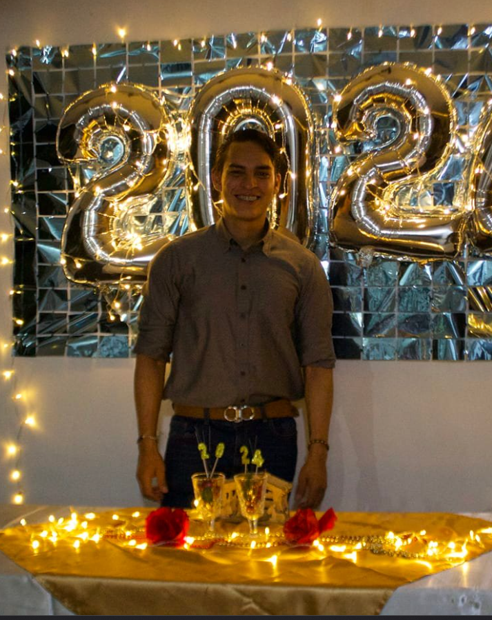
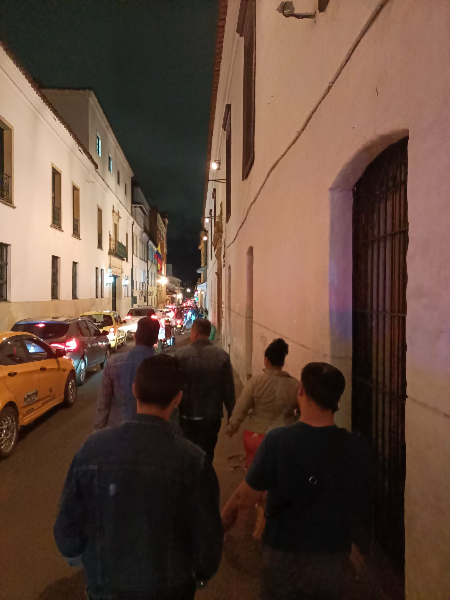
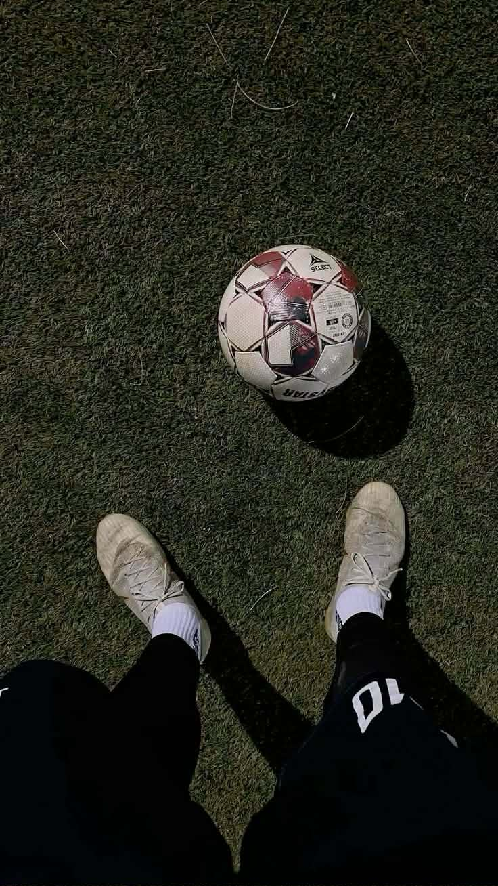
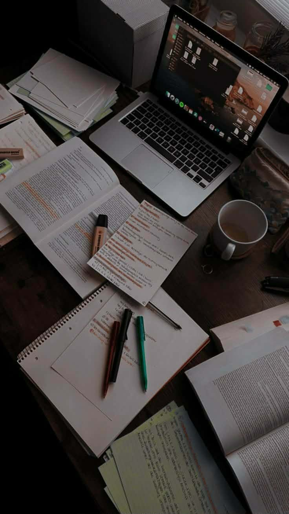

"I am César Román, a student passionate about knowledge and personal growth. I enjoy exploring new ideas, learning from every experience, and sharing my reflections on the academic journey I am pursuing. This space is a way to document my studies, my goals, and the memories that accompany me during this stage of my life."



About Me
Hello and welcome to my personal space on the web! My name is César, and I am someone who enjoys exploring new ideas, learning continuously, and sharing my thoughts with others. I have a strong interest in finance and law, but beyond academics and professional goals, I believe hobbies are what truly shape our personality and give balance to our daily lives.
In my free time, I dedicate myself to several activities that bring me joy and inspiration. Reading is one of my favorite hobbies—I love diving into novels, history books, and thought‑provoking essays. Music is another passion of mine; I enjoy discovering new genres and artists, and I often find that a good playlist can completely change my mood. Sports also play an important role in my life, especially football, which keeps me active and connected with friends. Traveling is something I deeply value as well, because it allows me to experience different cultures, meet new people, and broaden my perspective on the world.
For me, hobbies are more than just pastimes—they are opportunities to grow, to connect with others, and to find inspiration in everyday life. I hope that by sharing a little about myself, you can get to know me better and perhaps even find common interests that resonate with you.
Professional Ethos
Precision
Every line of code is written with the intent of achieving maximum efficiency and clarity.
Aesthetics
Form follows function. A digital solution must be as beautiful as it is robust.
Global Voice
Bilingualism is not just a skill; it is the tool that allows me to build for the world.